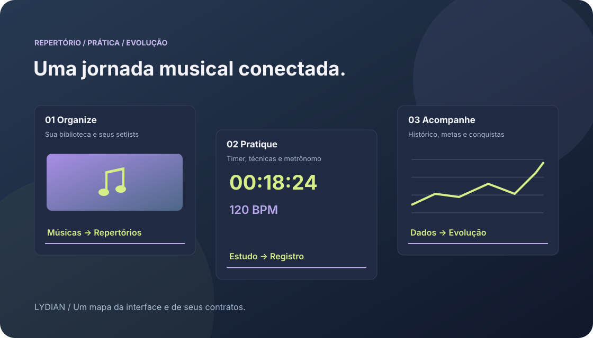
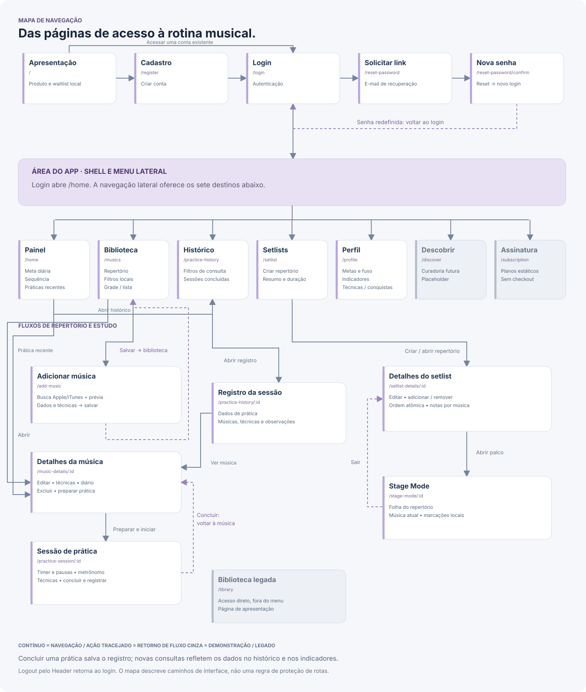

01 / Acesso e recuperação
Apresentação → cadastro → login → painel. Pelo login, a recuperação segue solicitação de link → nova senha → novo login.
Da organização do repertório à evolução na prática: um guia visual da experiência, dos componentes e dos contratos que compõem o Lydian.

Escolha uma visão nos controles acima. Somente UI mostra objetivos, ações e limites visíveis de cada página. Somente técnica mostra composição, contratos e arquivos. UI + técnica reúne as duas perspectivas. Busca e situação filtram as páginas; o catálogo de componentes e o índice geral de endpoints permanecem como referência na visão técnica.
Integrado consulta/salva dados reais no fluxo descrito. Parcial mistura integração real com ações locais ou exemplos. Demonstrativo apresenta conteúdo estático/mock, sem serviço de domínio ativo. O Header pode consultar o perfil mesmo em uma página demonstrativa.
As ilustrações são explicações visuais do funcionamento: não são capturas atuais do aplicativo, nem apresentam dados reais de usuários. Valores e composição usados nas imagens são didáticos. Clique em Ampliar para explorar detalhes ou imprimir com a visão selecionada.
Veja como as páginas se conectam e onde cada recurso entra na jornada. O mapa cobre os destinos do menu, os fluxos de acesso, estudo e palco, além das áreas demonstrativas e da biblioteca legada.

Apresentação → cadastro → login → painel. Pelo login, a recuperação segue solicitação de link → nova senha → novo login.
Biblioteca → adicionar ou abrir música → preparar sessão → praticar → concluir → detalhe da música. Novas consultas refletem o registro no histórico e nos indicadores.
Setlists → criar/abrir → adicionar músicas, ordenar e anotar → Stage Mode → detalhes do repertório. Marcações de execução ficam locais.
O menu lateral oferece Início, Biblioteca, Histórico, Setlists, Descobrir, Perfil e Assinatura. Header permite sair da sessão e voltar ao login. A rota /library é acessível diretamente, fora do menu da biblioteca real.
Página pública que apresenta a proposta do Lydian, o método de estudo e a experiência do produto.
Sem chamada HTTP de domínio nesta página. Consulte as notas de conteúdo local e o shell compartilhado.
| Componente | Entradas declaradas | Eventos declarados |
|---|---|---|
app-landing-about-section | — | — |
app-landing-experience-section | — | — |
app-landing-faq-section | — | — |
app-landing-features-section | — | — |
app-landing-footer | — | sectionNavigate |
app-landing-hero-section | navigationMenuOpen | navigationMenuToggle, sectionNavigate, shareRequested |
app-landing-methodology-section | — | — |
app-landing-preloader | — | finished, revealReady |
app-landing-product-showcase-section | — | — |
app-landing-proof-section | — | — |
app-landing-waitlist-section | — | — |
| Evento no template | Handler da página |
|---|---|
finished | onPreloaderFinished() |
navigationMenuToggle | toggleNavigationMenu() |
revealReady | onPreloaderRevealReady() |
sectionNavigate | navigateToSection($event) |
shareRequested | shareLandingPage() |
Entrada na conta usando e-mail e senha.
| Método / endpoint | Serviço → método | Entrada / consulta |
|---|---|---|
GET /v1/me | AuthService.checkUserLogged | — |
POST /v1/auth/login | AuthService.signIn | email,password |
Formulário e estados definidos diretamente no template; CommonModule, ReactiveFormsModule e RouterLink compõem a infraestrutura Angular local.
| Evento no template | Handler da página |
|---|---|
ngSubmit | onLogin() |
Criação de conta com nome, e-mail, senha e confirmação.
| Método / endpoint | Serviço → método | Entrada / consulta |
|---|---|---|
POST /v1/auth/signup | AuthService.signUp | fullName,email,password |
Formulário e estados definidos diretamente no template; CommonModule, ReactiveFormsModule e RouterLink compõem a infraestrutura Angular local.
| Evento no template | Handler da página |
|---|---|
ngSubmit | onRegister() |
Solicitação de instruções para recuperar o acesso.
| Método / endpoint | Serviço → método | Entrada / consulta |
|---|---|---|
POST /v1/auth/forgot-password | AuthService.resetPassword |
Formulário e estados definidos diretamente no template; CommonModule, ReactiveFormsModule e RouterLink compõem a infraestrutura Angular local.
| Evento no template | Handler da página |
|---|---|
ngSubmit | onConfirm() |
ngSubmit | onReset() |
Formulário de nova senha aberto pelo link recebido no e-mail.
| Método / endpoint | Serviço → método | Entrada / consulta |
|---|---|---|
POST /v1/auth/reset-password/session ou /auth/reset-password | AuthService.completePasswordRecovery | password + recovery_token/refresh_token ou token_hash |
Formulário e estados definidos diretamente no template; CommonModule, ReactiveFormsModule e RouterLink compõem a infraestrutura Angular local.
| Evento no template | Handler da página |
|---|---|
ngSubmit | onConfirm() |
ngSubmit | onReset() |
Visão diária e semanal da rotina musical, com sessões recentes.
| Método / endpoint | Serviço → método | Entrada / consulta |
|---|---|---|
GET /v1/me | AuthService.getCurrentUser | — |
GET /v1/practice-sessions/history | PracticeSessionService.getRecentPracticeSessions | page=1 + limit |
GET /v1/me/practice-summary | PracticeSummaryService.getPracticeSummary | — |
Consumo indireto comum: Header → GET /v1/me; menu de saída → POST /v1/auth/logout. Não são novas chamadas de domínio da página.
| Componente | Entradas declaradas | Eventos declarados |
|---|---|---|
app-content-skeleton-loading | label | — |
app-daily-practice | practice | — |
app-dashboard-shell | pageTitle | — |
app-next-practice-card | practice | — |
app-practice-streak-card | streak | — |
app-recent-sessions-card | sessions | musicSelected, historyRequested |
app-weekly-performance | performance | — |
| Evento no template | Handler da página |
|---|---|
historyRequested | openPracticeHistory() |
musicSelected | openMusicDetails($event) |
Página de apresentação reservada para organização da biblioteca.
Sem chamada HTTP de domínio nesta página. Consulte as notas de conteúdo local e o shell compartilhado.
Consumo indireto comum: Header → GET /v1/me; menu de saída → POST /v1/auth/logout. Não são novas chamadas de domínio da página.
| Componente | Entradas declaradas | Eventos declarados |
|---|---|---|
app-dashboard-feature-placeholder | content | — |
app-dashboard-shell | pageTitle | — |
Listagem do repertório pessoal, com cards, filtros de estado e paginação.
| Método / endpoint | Serviço → método | Entrada / consulta |
|---|---|---|
GET /v1/songs | LibraryService.getMusicLibrary | page,limit,search,sort_by,sort_order |
Consumo indireto comum: Header → GET /v1/me; menu de saída → POST /v1/auth/logout. Não são novas chamadas de domínio da página.
| Componente | Entradas declaradas | Eventos declarados |
|---|---|---|
app-content-skeleton-loading | label | — |
app-dashboard-shell | pageTitle | — |
app-music-library-card | music, viewMode | — |
app-musics-hero | musicCount | — |
app-musics-toolbar | activeFilter, viewMode | filterSelected, viewModeSelected |
app-pagination | currentPage, pageSize, totalItems, ariaLabel | pageSelected |
| Evento no template | Handler da página |
|---|---|
filterSelected | selectFilter($event) |
pageSelected | selectPage($event) |
viewModeSelected | selectViewMode($event) |
Busca em catálogo externo e cadastro enriquecido no repertório do usuário.
| Método / endpoint | Serviço → método | Entrada / consulta |
|---|---|---|
GET https://itunes.apple.com/search | AppleMusicService.searchSongs | term,country=br,media=music,entity=song,limit=20 |
POST /v1/songs | LibraryService.createMusic | CreateSongRequest |
PATCH /v1/songs/:id/techniques | LibraryService.updateMusicTechniques | technique_ids |
GET /v1/techniques | TechniquesService.getTechniques | category?,search? |
Consumo indireto comum: Header → GET /v1/me; menu de saída → POST /v1/auth/logout. Não são novas chamadas de domínio da página.
| Componente | Entradas declaradas | Eventos declarados |
|---|---|---|
app-dashboard-shell | pageTitle | — |
app-music-search-results | musics, searchQuery, isLoading, hasSearched, searchErrorMessage, previewErrorMessage, selectedMusicId, activePreviewMusicId, previewProgressPercentage, previewRemainingSeconds | searchQueryChanged, musicSelected, previewToggled |
app-selected-music-detail | music, isAdded, isAdding, addErrorMessage, availableTechniques, isLoadingTechniques, techniqueErrorMessage | musicAdded, techniquesRetryRequested |
| Evento no template | Handler da página |
|---|---|
musicAdded | addSelectedMusic($event) |
musicSelected | selectMusic($event) |
previewToggled | togglePreview($event) |
searchQueryChanged | updateSearchQuery($event) |
techniquesRetryRequested | reloadTechniques() |
Dados da obra, edição, técnicas, metrônomo e diário de prática.
| Método / endpoint | Serviço → método | Entrada / consulta |
|---|---|---|
DELETE /v1/songs/:id | LibraryService.deleteMusic | — |
GET /v1/songs/:id | LibraryService.getMusicDetails | — |
PATCH /v1/songs/:id | LibraryService.updateMusic | UpdateSongRequest |
PATCH /v1/songs/:id/techniques | LibraryService.updateMusicTechniques | technique_ids |
GET /v1/practice-sessions/history | PracticeSessionService.getRecentSessionsForSong | song_id + paginação |
POST /v1/practice-sessions/start | PracticeSessionService.startPracticeSession | StartPracticeSessionRequest |
GET /v1/techniques | TechniquesService.getTechniques | category?,search? |
Consumo indireto comum: Header → GET /v1/me; menu de saída → POST /v1/auth/logout. Não são novas chamadas de domínio da página.
| Componente | Entradas declaradas | Eventos declarados |
|---|---|---|
app-confirmation-modal | eyebrow, title, subject, description, cancelLabel, confirmLabel, loadingLabel, isProcessing, errorMessage | cancelled, confirmed |
app-content-skeleton-loading | label | — |
app-dashboard-shell | pageTitle | — |
app-mini-metronome | tempo, isRunning | tempoChanged, playToggled |
app-music-details-editor | song, techniques, isLoadingTechniques, techniquesErrorMessage, isSaving | retryTechniquesRequested, saved |
app-music-details-hero | music, isSaved, isDeleting, isCreatingPractice | saveToggled, deleteRequested, practiceRequested |
app-music-rating | rating, notes | ratingChanged, notesChanged |
app-music-techniques | techniques, technicalFocus | — |
app-practice-diary | entries | entrySelected |
app-practice-diary-detail-modal | entry | closed |
app-practice-session-setup-modal | musicTitle, musicArtist, suggestedFocus, isSubmitting, errorMessage | cancelled, submitted |
app-progress-monitor | bars | — |
| Evento no template | Handler da página |
|---|---|
cancelled | cancelMusicDeletion() |
cancelled | closePracticeSetup() |
closed | closeDiaryEntry() |
confirmed | deleteMusic() |
deleteRequested | requestMusicDeletion() |
entrySelected | openDiaryEntry($event) |
notesChanged | updatePracticeNotes($event) |
playToggled | toggleMetronome() |
practiceRequested | openPracticeSetup() |
ratingChanged | updateRating($event) |
retryTechniquesRequested | loadTechniques() |
saveToggled | toggleSaved() |
saved | saveMusicDetails($event) |
submitted | createPracticeSession($event) |
tempoChanged | changeTempo($event) |
Ambiente focado para acompanhar tempo ativo, metrônomo e conclusão do estudo.
| Método / endpoint | Serviço → método | Entrada / consulta |
|---|---|---|
POST /v1/practice-sessions/:id/finish | PracticeSessionService.finishPracticeSession | FinishPracticeSessionRequest |
GET /v1/practice-sessions/:id | PracticeSessionService.getPracticeSession | — |
| Componente | Entradas declaradas | Eventos declarados |
|---|---|---|
app-content-skeleton-loading | label | — |
app-practice-session-completion-modal | musicTitle, elapsedTime, durationMinutes, isSubmitting, errorMessage | cancelled, submitted |
app-practice-session-header | elapsedTime, isTimerRunning, sessionStatusLabel | timerToggled |
app-session-metronome | tempo, isRunning | tempoChanged, playToggled |
app-session-summary | techniques | techniqueSelected |
app-session-tool-dock | activeTool | toolSelected |
app-sheet-music-panel | — | completionRequested |
| Evento no template | Handler da página |
|---|---|
cancelled | cancelSessionCompletion() |
completionRequested | requestSessionCompletion() |
playToggled | toggleMetronome() |
submitted | completeSession($event) |
techniqueSelected | selectTechnique($event) |
tempoChanged | changeTempo($event) |
timerToggled | toggleSessionTimer() |
toolSelected | selectTool($event) |
Consulta das sessões concluídas com filtros e acesso ao detalhe.
| Método / endpoint | Serviço → método | Entrada / consulta |
|---|---|---|
GET /v1/songs | LibraryService.getMusicLibrary | page,limit,search,sort_by,sort_order |
GET /v1/practice-sessions/history | PracticeSessionService.getPracticeHistory | page,limit,sort_by,sort_order,search,song_id,from,to |
Consumo indireto comum: Header → GET /v1/me; menu de saída → POST /v1/auth/logout. Não são novas chamadas de domínio da página.
| Componente | Entradas declaradas | Eventos declarados |
|---|---|---|
app-content-skeleton-loading | label | — |
app-dashboard-shell | pageTitle | — |
app-practice-history-card | item | opened |
app-practice-history-filters | musics, isLoading | filtersApplied |
| Evento no template | Handler da página |
|---|---|
click | changePage(meta.page + 1) |
click | changePage(meta.page - 1) |
click | retryLoad() |
filtersApplied | applyFilters($event) |
opened | openSession($event) |
Leitura detalhada de uma sessão e de suas associações musicais.
| Método / endpoint | Serviço → método | Entrada / consulta |
|---|---|---|
GET /v1/practice-sessions/:id | PracticeSessionService.getPracticeSession | — |
Consumo indireto comum: Header → GET /v1/me; menu de saída → POST /v1/auth/logout. Não são novas chamadas de domínio da página.
| Componente | Entradas declaradas | Eventos declarados |
|---|---|---|
app-content-skeleton-loading | label | — |
app-dashboard-shell | pageTitle | — |
| Evento no template | Handler da página |
|---|---|
click | retryLoad() |
Identidade musical, metas de prática e indicadores de evolução registrados.
| Método / endpoint | Serviço → método | Entrada / consulta |
|---|---|---|
GET /v1/me/practice-goal | PracticeGoalService.getPracticeGoal | — |
PATCH /v1/me/practice-goal | PracticeGoalService.updatePracticeGoal | daily_target_seconds,weekly_target_days,timezone |
GET /v1/me/practice-summary | PracticeSummaryService.getPracticeSummary | — |
GET /v1/me | ProfileService.getProfile | — |
Consumo indireto comum: Header → GET /v1/me; menu de saída → POST /v1/auth/logout. Não são novas chamadas de domínio da página.
| Componente | Entradas declaradas | Eventos declarados |
|---|---|---|
app-achievement-card | achievement | — |
app-content-skeleton-loading | label | — |
app-dashboard-shell | pageTitle | — |
app-practice-goal-editor | goal, isSaving | saved |
app-profile-identity | profile | — |
app-profile-stat-card | stat | — |
app-recent-achievements | achievements | — |
app-skill-matrix | skills | — |
app-training-intensity | metrics | — |
| Evento no template | Handler da página |
|---|---|
saved | savePracticeGoal($event) |
Criação e consulta de repertórios para estudo e apresentação.
| Método / endpoint | Serviço → método | Entrada / consulta |
|---|---|---|
POST /v1/setlists | SetlistService.createSetlist | name,description,visibility |
GET /v1/setlists | SetlistService.getSetlists | page,limit,search,sort_by,sort_order |
Consumo indireto comum: Header → GET /v1/me; menu de saída → POST /v1/auth/logout. Não são novas chamadas de domínio da página.
| Componente | Entradas declaradas | Eventos declarados |
|---|---|---|
app-content-skeleton-loading | label | — |
app-create-setlist-panel | isSubmitting, errorMessage | cancelled, setlistCreated |
app-dashboard-shell | pageTitle | — |
app-pagination | currentPage, pageSize, totalItems, ariaLabel | pageSelected |
app-setlist-card | setlist, viewMode | — |
app-setlist-hero | setlistCount, totalSongs | createRequested |
app-view-mode-toggle | viewMode | viewModeSelected |
| Evento no template | Handler da página |
|---|---|
cancelled | closeCreatePanel() |
click | openCreatePanel() |
createRequested | openCreatePanel() |
pageSelected | selectPage($event) |
setlistCreated | createSetlist($event) |
viewModeSelected | selectViewMode($event) |
Edição de repertório, inclusão/remoção de músicas, notas e ordenação.
| Método / endpoint | Serviço → método | Entrada / consulta |
|---|---|---|
GET /v1/songs | LibraryService.getMusicLibrary | page,limit,search,sort_by,sort_order |
POST /v1/setlists/:id/songs | SetlistService.addSong | song_id,position?,notes? |
DELETE /v1/setlists/:id | SetlistService.deleteSetlist | — |
GET /v1/setlists/:id | SetlistService.getSetlistDetails | — |
DELETE /v1/setlists/:id/songs/:songId | SetlistService.removeSong | — |
PATCH /v1/setlists/:id/songs/order | SetlistService.reorderSongs | song_ids: lista completa de IDs ativos |
PATCH /v1/setlists/:id | SetlistService.updateSetlist | name,description,visibility |
PATCH /v1/setlists/:id/songs/:songId | SetlistService.updateSong | position?,notes? (UI atual: notes) |
Consumo indireto comum: Header → GET /v1/me; menu de saída → POST /v1/auth/logout. Não são novas chamadas de domínio da página.
| Componente | Entradas declaradas | Eventos declarados |
|---|---|---|
app-confirmation-modal | eyebrow, title, subject, description, cancelLabel, confirmLabel, loadingLabel, isProcessing, errorMessage | cancelled, confirmed |
app-content-skeleton-loading | label | — |
app-dashboard-shell | pageTitle | — |
app-edit-setlist-panel | set, isSubmitting, errorMessage | cancelled, saved |
app-music-library-card | music, viewMode | — |
app-setlist-details-hero | setlist, songCount, duration | addMusicRequested, stageModeRequested, editSetlistRequested, deleteSetlistRequested |
app-setlist-music-picker | musics, isSubmitting, errorMessage | cancelled, musicSelected |
app-setlist-track-controls | position, trackCount, notes, isSaving | moved, notesSaved |
app-view-mode-toggle | viewMode | viewModeSelected |
| Evento no template | Handler da página |
|---|---|
addMusicRequested | openMusicPicker() |
cancelled | cancelMusicRemoval() |
cancelled | cancelSetlistDeletion() |
cancelled | closeEditPanel() |
cancelled | closeMusicPicker() |
click | openMusicPicker() |
click | requestMusicRemoval(trackItem.song.id) |
confirmed | deleteSetlist() |
confirmed | removeMusic(pendingMusic.id) |
deleteSetlistRequested | requestSetlistDeletion() |
editSetlistRequested | openEditPanel() |
moved | moveTrack(trackItem.song.id, $event) |
musicSelected | addMusic($event) |
notesSaved | saveTrackNotes(trackItem.song.id, $event) |
saved | updateSetlist($event) |
stageModeRequested | openStageMode() |
viewModeSelected | selectViewMode($event) |
Visualização do repertório para acompanhar a execução no palco.
| Método / endpoint | Serviço → método | Entrada / consulta |
|---|---|---|
GET /v1/setlists/:id | SetlistService.getSetlistDetails | — |
| Componente | Entradas declaradas | Eventos declarados |
|---|---|---|
app-content-skeleton-loading | label | — |
app-stage-setlist-paper | setlist, currentTrackIndex, playedMusicIds | trackSelected, playedToggled |
| Evento no template | Handler da página |
|---|---|
click | exitStageMode() |
click | retryLoad() |
click | selectNextTrack() |
click | selectPreviousTrack() |
click | toggleCurrentTrackPlayed() |
playedToggled | togglePlayed($event) |
trackSelected | selectTrack($event) |
Área reservada para recomendações e trilhas de desenvolvimento.
Sem chamada HTTP de domínio nesta página. Consulte as notas de conteúdo local e o shell compartilhado.
Consumo indireto comum: Header → GET /v1/me; menu de saída → POST /v1/auth/logout. Não são novas chamadas de domínio da página.
| Componente | Entradas declaradas | Eventos declarados |
|---|---|---|
app-content-skeleton-loading | label | — |
app-dashboard-feature-placeholder | content | — |
app-dashboard-shell | pageTitle | — |
Comparação visual dos planos e apresentação de uma assinatura de exemplo.
Sem chamada HTTP de domínio nesta página. Consulte as notas de conteúdo local e o shell compartilhado.
Consumo indireto comum: Header → GET /v1/me; menu de saída → POST /v1/auth/logout. Não são novas chamadas de domínio da página.
| Componente | Entradas declaradas | Eventos declarados |
|---|---|---|
app-current-subscription-card | subscription | — |
app-dashboard-shell | pageTitle | — |
app-subscription-plan-card | plan | planSelected |
| Evento no template | Handler da página |
|---|---|
planSelected | selectPlan($event) |
Nenhuma página encontrada. Altere a busca ou limpe os filtros.
Frontend Angular standalone organizado por feature; NestJS expõe REST /v1 e concentra regras de negócio. Supabase é infraestrutura do backend. O frontend documentado usa HttpClient e não lê tabelas Supabase diretamente.
| Camada | Responsabilidade | Referência |
|---|---|---|
| Rotas | app.routes.ts compõe as rotas lazy loadComponent de cada feature. Guards canActivate não estão declarados nessa composição. | src/app/app.routes.ts |
| Core | AuthService, interceptor, ApiRequestError, áudio do metrônomo, SEO e notificações globais. | src/app/core/auth/auth.service.ts |
| Shared UI | Shell, Header, sidebar, botão, confirmação, paginação, skeleton, alternância de apresentação e placeholder. | src/app/shared/ui/dashboard-shell/dashboard-shell.ts |
| Features | pages coordenam dados/grid; components recebem dados e emitem eventos; data-access/services chamam API; models descrevem contratos. | GEMINI.md |
| SSR/hidratação | withFetch, provideClientHydration e withEventReplay. Dinâmicas configuradas como Server; confirmação de senha Client; demais caem em Prerender. | src/app/app.config.ts src/app/app.routes.server.ts |
| Malha e visual | Páginas do App seguem section > .container > .row > .col-12.col-md-*. Filhos não possuem grid externo. SCSS e variáveis/mixins sustentam o design; Bootstrap/fontes entram pelo index. | AGENTS.md |
| Sessão | Cookies HttpOnly + withCredentials; 401 protegido faz refresh compartilhado e repete request; login/cadastro/recuperação não fazem refresh automático. | src/app/core/interceptors/auth.interceptor.ts |
| Cache | AuthService compartilha /me e limpa cache em login/logout/reset ou erro. TechniquesService compartilha catálogo sem filtros e oferece clearCatalogCache. | src/app/features/techniques/data-access/techniques.service.ts |
| Estado local | Signals e campos privados com getters; Subject/takeUntil para subscriptions; OnPush/markForCheck onde utilizado. Sidebar guarda apenas preferência de expansão em localStorage. | src/app/shared/ui/dashboard-shell/dashboard-shell.ts |
| Áudio | MetronomeAudioService gera ticks via Web Audio; AppleMusicService gerencia HTMLAudioElement para prévia externa. Não existe captura de áudio por esses serviços. | src/app/core/audio/metronome-audio.service.ts |
npm start executa ng serve --ssl em https://localhost:4200. Serve padrão usa configuração development, cuja base é /v1. No proxy.conf.json atual, esse prefixo aponta para https://lydian-app-api.onrender.com, com secure:true e changeOrigin:true. O environment.ts base também aponta para a API publicada. A API local, quando usada, permanece https://localhost:3000. Alterações desses arquivos mudam o destino real; não presumir que npm start esteja usando backend local.
ApiRequestError preserva mensagem, statusCode e requestId quando disponíveis. Casos comuns: 0/conexão, 400/validação, 401/autenticação ou link inválido, 403/permissão/origem, 404/recurso ausente, 409/conflito, 429/limite, 500/servidor e 503/serviço/configuração. O tratamento específico depende da página; esta lista não significa que cada componente trate todos os códigos. Não incluir segredos, estados autenticados, cookies ou tokens reais em documentação. Alguns logs de erro legados ainda existem no código; não assumir uma auditoria completa de logging.
Paths Lydian abaixo são relativos à base do ambiente, já incluindo /v1. O catálogo separa chamadas usadas pela UI de métodos apenas expostos pelos serviços. Um método disponível não significa que exista uma ação de tela para utilizá-lo. Busca Apple/iTunes é externa e não passa pelo interceptor autenticado.
| Método / recurso | Serviço e método | Consumidores atuais | Body / query |
|---|---|---|---|
POST /v1/auth/login | AuthService.signIn | Login | email,password |
POST /v1/auth/signup | AuthService.signUp | Cadastro | fullName,email,password |
GET /v1/me | AuthService.getCurrentUser | Painel de prática, Header compartilhado | — |
GET /v1/me | AuthService.checkUserLogged | Login | — |
POST /v1/auth/logout | AuthService.signOut | Header compartilhado | {} |
POST /v1/auth/refresh | AuthService.refreshToken | authInterceptor | {}; cookie de refresh |
POST /v1/auth/forgot-password | AuthService.resetPassword | Solicitar recuperação | |
POST /v1/auth/reset-password/session ou /auth/reset-password | AuthService.completePasswordRecovery | Confirmar nova senha | password + recovery_token/refresh_token ou token_hash |
GET /v1/songs | LibraryService.getMusicLibrary | Biblioteca de músicas, Histórico de prática, Detalhes do setlist | page,limit,search,sort_by,sort_order |
GET /v1/songs/:id | LibraryService.getMusicDetails | Detalhes da música | — |
POST /v1/songs | LibraryService.createMusic | Adicionar música | CreateSongRequest |
PATCH /v1/songs/:id | LibraryService.updateMusic | Detalhes da música | UpdateSongRequest |
PATCH /v1/songs/:id/techniques | LibraryService.updateMusicTechniques | Adicionar música, Detalhes da música | technique_ids |
DELETE /v1/songs/:id | LibraryService.deleteMusic | Detalhes da música | — |
GET /v1/setlists | SetlistService.getSetlists | Setlists | page,limit,search,sort_by,sort_order |
GET /v1/setlists/:id | SetlistService.getSetlistDetails | Detalhes do setlist, Stage Mode | — |
POST /v1/setlists | SetlistService.createSetlist | Setlists | name,description,visibility |
PATCH /v1/setlists/:id | SetlistService.updateSetlist | Detalhes do setlist | name,description,visibility |
DELETE /v1/setlists/:id | SetlistService.deleteSetlist | Detalhes do setlist | — |
POST /v1/setlists/:id/songs | SetlistService.addSong | Detalhes do setlist | song_id,position?,notes? |
DELETE /v1/setlists/:id/songs/:songId | SetlistService.removeSong | Detalhes do setlist | — |
PATCH /v1/setlists/:id/songs/:songId | SetlistService.updateSong | Detalhes do setlist | position?,notes? (UI atual: notes) |
PATCH /v1/setlists/:id/songs/order | SetlistService.reorderSongs | Detalhes do setlist | song_ids: lista completa de IDs ativos |
GET /v1/practice-sessions/:id | PracticeSessionService.getPracticeSession | Sessão de prática, Detalhe de prática concluída | — |
GET /v1/practice-sessions/history | PracticeSessionService.getPracticeHistory | Histórico de prática | page,limit,sort_by,sort_order,search,song_id,from,to |
GET /v1/practice-sessions/history | PracticeSessionService.getRecentSessionsForSong | Detalhes da música | song_id + paginação |
GET /v1/practice-sessions/history | PracticeSessionService.getRecentPracticeSessions | Painel de prática | page=1 + limit |
POST /v1/practice-sessions/start | PracticeSessionService.startPracticeSession | Detalhes da música | StartPracticeSessionRequest |
POST /v1/practice-sessions/:id/finish | PracticeSessionService.finishPracticeSession | Sessão de prática | FinishPracticeSessionRequest |
GET /v1/practice-sessions | PracticeSessionService.listPracticeSessions | Disponível no serviço; sem chamada de página mapeada | ListPracticeSessionsQuery |
POST /v1/practice-sessions | PracticeSessionService.createPracticeSession | Disponível no serviço; sem chamada de página mapeada | CreatePracticeSessionRequest |
POST /v1/practice-sessions/:id/songs | PracticeSessionService.addSong | Disponível no serviço; sem chamada de página mapeada | AddPracticeSessionSongRequest |
PATCH /v1/practice-sessions/:id | PracticeSessionService.updatePracticeSession | Disponível no serviço; sem chamada de página mapeada | UpdatePracticeSessionRequest |
PATCH /v1/practice-sessions/:id/songs/:songId | PracticeSessionService.updateSong | Disponível no serviço; sem chamada de página mapeada | UpdatePracticeSessionSongRequest |
DELETE /v1/practice-sessions/:id | PracticeSessionService.deletePracticeSession | Disponível no serviço; sem chamada de página mapeada | — |
GET /v1/me | ProfileService.getProfile | Perfil e objetivos | — |
PATCH /v1/me | ProfileService.updateProfile | Disponível no serviço; sem chamada de página mapeada | display_name,avatar_url,main_instrument,experience_level |
GET /v1/me/practice-goal | PracticeGoalService.getPracticeGoal | Perfil e objetivos | — |
PATCH /v1/me/practice-goal | PracticeGoalService.updatePracticeGoal | Perfil e objetivos | daily_target_seconds,weekly_target_days,timezone |
GET /v1/me/practice-summary | PracticeSummaryService.getPracticeSummary | Painel de prática, Perfil e objetivos | — |
GET /v1/techniques | TechniquesService.getTechniques | Adicionar música, Detalhes da música | category?,search? |
GET https://itunes.apple.com/search | AppleMusicService.searchSongs | Adicionar música | term,country=br,media=music,entity=song,limit=20 |
Recursos individuais usam {data:…}; coleções paginadas usam {data:[],meta:{page,limit,total}}. Meta é autoridade para totais e navegação. Resumos de setlists trazem os dados dos cards; detalhes mantêm associações musicais. Sessões finalizadas trazem tempo canônico em segundos, com suporte de leitura aos minutos legados.
Não há serviço de UI para waitlist, billing/checkout, Discover ou upload de avatar/partitura. Não confundir disponibilidade de um endpoint no backend com consumo efetivo no frontend. GET /health é uma verificação operacional, não uma chamada de página.
Contratos extraídos das declarações @Input/@Output e input()/output(). Consumidores representam tags efetivas nos templates, excluindo comentários; não incluem uso hipotético ou simples imports sem renderização. Uma entrada declarada pode ser opcional: abra o arquivo para conferir required, tipos e defaults.
Use o índice de cada página para entender a composição direta. Abaixo estão também as dependências indiretas, úteis para localizar componentes compartilhados entre features.
app-root · app| Inputs | Outputs | Componentes filhos | Consumido por |
|---|---|---|---|
| — | — | — | Nenhum template ativo mapeado |
app-login · loginsrc/app/features/auth/login/login.ts
| Inputs | Outputs | Componentes filhos | Consumido por |
|---|---|---|---|
| — | — | — | Nenhum template ativo mapeado |
app-register · registersrc/app/features/auth/register/register.ts
| Inputs | Outputs | Componentes filhos | Consumido por |
|---|---|---|---|
| — | — | — | Nenhum template ativo mapeado |
app-reset-password · reset-passwordsrc/app/features/auth/reset-password/reset-password.ts
| Inputs | Outputs | Componentes filhos | Consumido por |
|---|---|---|---|
| — | — | — | Nenhum template ativo mapeado |
app-discover · discoversrc/app/features/discover/pages/discover/discover.ts
| Inputs | Outputs | Componentes filhos | Consumido por |
|---|---|---|---|
| — | — | app-content-skeleton-loading, app-dashboard-feature-placeholder, app-dashboard-shell | Nenhum template ativo mapeado |
app-daily-practice · daily-practicesrc/app/features/home/components/daily-practice/daily-practice.ts
| Inputs | Outputs | Componentes filhos | Consumido por |
|---|---|---|---|
| practice | — | — | app-home |
app-next-practice-card · next-practice-cardsrc/app/features/home/components/next-practice-card/next-practice-card.ts
| Inputs | Outputs | Componentes filhos | Consumido por |
|---|---|---|---|
| practice | — | — | app-home |
app-practice-streak-card · practice-streak-cardsrc/app/features/home/components/practice-streak-card/practice-streak-card.ts
| Inputs | Outputs | Componentes filhos | Consumido por |
|---|---|---|---|
| streak | — | — | app-home |
app-recent-sessions-card · recent-sessions-cardsrc/app/features/home/components/recent-sessions-card/recent-sessions-card.ts
| Inputs | Outputs | Componentes filhos | Consumido por |
|---|---|---|---|
| sessions | musicSelected, historyRequested | — | app-home |
app-weekly-performance · weekly-performancesrc/app/features/home/components/weekly-performance/weekly-performance.ts
| Inputs | Outputs | Componentes filhos | Consumido por |
|---|---|---|---|
| performance | — | — | app-home |
app-home · homesrc/app/features/home/pages/home/home.ts
| Inputs | Outputs | Componentes filhos | Consumido por |
|---|---|---|---|
| — | — | app-content-skeleton-loading, app-daily-practice, app-dashboard-shell, app-next-practice-card, app-practice-streak-card, app-recent-sessions-card, app-weekly-performance | Nenhum template ativo mapeado |
app-landing-about-section · landing-about-sectionsrc/app/features/landing/components/landing-about-section/landing-about-section.ts
| Inputs | Outputs | Componentes filhos | Consumido por |
|---|---|---|---|
| — | — | — | app-landing-page |
app-landing-cta-section · landing-cta-sectionsrc/app/features/landing/components/landing-cta-section/landing-cta-section.ts
| Inputs | Outputs | Componentes filhos | Consumido por |
|---|---|---|---|
| — | — | — | Nenhum template ativo mapeado |
app-landing-experience-section · landing-experience-sectionsrc/app/features/landing/components/landing-experience-section/landing-experience-section.ts
| Inputs | Outputs | Componentes filhos | Consumido por |
|---|---|---|---|
| — | — | — | app-landing-page |
app-landing-faq-section · landing-faq-sectionsrc/app/features/landing/components/landing-faq-section/landing-faq-section.ts
| Inputs | Outputs | Componentes filhos | Consumido por |
|---|---|---|---|
| — | — | — | app-landing-page |
app-landing-features-section · landing-features-sectionsrc/app/features/landing/components/landing-features-section/landing-features-section.ts
| Inputs | Outputs | Componentes filhos | Consumido por |
|---|---|---|---|
| — | — | — | app-landing-page |
app-landing-hero-section · landing-hero-sectionsrc/app/features/landing/components/landing-hero-section/landing-hero-section.ts
| Inputs | Outputs | Componentes filhos | Consumido por |
|---|---|---|---|
| navigationMenuOpen | navigationMenuToggle, sectionNavigate, shareRequested | — | app-landing-page |
app-landing-methodology-section · landing-methodology-sectionsrc/app/features/landing/components/landing-methodology-section/landing-methodology-section.ts
| Inputs | Outputs | Componentes filhos | Consumido por |
|---|---|---|---|
| — | — | — | app-landing-page |
app-landing-plans-section · landing-plans-sectionsrc/app/features/landing/components/landing-plans-section/landing-plans-section.ts
| Inputs | Outputs | Componentes filhos | Consumido por |
|---|---|---|---|
| — | sectionNavigate | — | Nenhum template ativo mapeado |
app-landing-preloader · landing-preloadersrc/app/features/landing/components/landing-preloader/landing-preloader.ts
| Inputs | Outputs | Componentes filhos | Consumido por |
|---|---|---|---|
| — | finished, revealReady | — | app-landing-page |
app-landing-product-showcase-section · landing-product-showcase-section| Inputs | Outputs | Componentes filhos | Consumido por |
|---|---|---|---|
| — | — | — | app-landing-page |
app-landing-proof-section · landing-proof-sectionsrc/app/features/landing/components/landing-proof-section/landing-proof-section.ts
| Inputs | Outputs | Componentes filhos | Consumido por |
|---|---|---|---|
| — | — | — | app-landing-page |
app-landing-waitlist-section · landing-waitlist-sectionsrc/app/features/landing/components/landing-waitlist-section/landing-waitlist-section.ts
| Inputs | Outputs | Componentes filhos | Consumido por |
|---|---|---|---|
| — | — | — | app-landing-page |
app-landing-page · landing-pagesrc/app/features/landing/pages/landing-page/landing-page.ts
| Inputs | Outputs | Componentes filhos | Consumido por |
|---|---|---|---|
| — | — | app-landing-about-section, app-landing-experience-section, app-landing-faq-section, app-landing-features-section, app-landing-footer, app-landing-hero-section, app-landing-methodology-section, app-landing-preloader, app-landing-product-showcase-section, app-landing-proof-section, app-landing-waitlist-section | Nenhum template ativo mapeado |
app-mini-metronome · mini-metronomesrc/app/features/library/components/mini-metronome/mini-metronome.ts
| Inputs | Outputs | Componentes filhos | Consumido por |
|---|---|---|---|
| tempo, isRunning | tempoChanged, playToggled | — | app-music-details |
app-music-details-editor · music-details-editorsrc/app/features/library/components/music-details-editor/music-details-editor.ts
| Inputs | Outputs | Componentes filhos | Consumido por |
|---|---|---|---|
| song, techniques, isLoadingTechniques, techniquesErrorMessage, isSaving | retryTechniquesRequested, saved | app-button, app-technique-selector | app-music-details |
app-music-details-hero · music-details-herosrc/app/features/library/components/music-details-hero/music-details-hero.ts
| Inputs | Outputs | Componentes filhos | Consumido por |
|---|---|---|---|
| music, isSaved, isDeleting, isCreatingPractice | saveToggled, deleteRequested, practiceRequested | — | app-music-details |
app-music-library-card · music-library-cardsrc/app/features/library/components/music-library-card/music-library-card.ts
| Inputs | Outputs | Componentes filhos | Consumido por |
|---|---|---|---|
| music, viewMode | — | — | app-musics, app-setlist-details |
app-music-rating · music-ratingsrc/app/features/library/components/music-rating/music-rating.ts
| Inputs | Outputs | Componentes filhos | Consumido por |
|---|---|---|---|
| rating, notes | ratingChanged, notesChanged | — | app-music-details |
app-music-search-results · music-search-resultssrc/app/features/library/components/music-search-results/music-search-results.ts
| Inputs | Outputs | Componentes filhos | Consumido por |
|---|---|---|---|
| musics, searchQuery, isLoading, hasSearched, searchErrorMessage, previewErrorMessage, selectedMusicId, activePreviewMusicId, previewProgressPercentage, previewRemainingSeconds | searchQueryChanged, musicSelected, previewToggled | — | app-add-music |
app-music-techniques · music-techniquessrc/app/features/library/components/music-techniques/music-techniques.ts
| Inputs | Outputs | Componentes filhos | Consumido por |
|---|---|---|---|
| techniques, technicalFocus | — | — | app-music-details |
app-musics-hero · musics-herosrc/app/features/library/components/musics-hero/musics-hero.ts
| Inputs | Outputs | Componentes filhos | Consumido por |
|---|---|---|---|
| musicCount | — | — | app-musics |
app-musics-toolbar · musics-toolbarsrc/app/features/library/components/musics-toolbar/musics-toolbar.ts
| Inputs | Outputs | Componentes filhos | Consumido por |
|---|---|---|---|
| activeFilter, viewMode | filterSelected, viewModeSelected | app-view-mode-toggle | app-musics |
app-practice-diary · practice-diarysrc/app/features/library/components/practice-diary/practice-diary.ts
| Inputs | Outputs | Componentes filhos | Consumido por |
|---|---|---|---|
| entries | entrySelected | — | app-music-details |
app-practice-diary-detail-modal · practice-diary-detail-modalsrc/app/features/library/components/practice-diary-detail-modal/practice-diary-detail-modal.ts
| Inputs | Outputs | Componentes filhos | Consumido por |
|---|---|---|---|
| entry | closed | — | app-music-details |
app-progress-monitor · progress-monitorsrc/app/features/library/components/progress-monitor/progress-monitor.ts
| Inputs | Outputs | Componentes filhos | Consumido por |
|---|---|---|---|
| bars | — | — | app-music-details |
app-selected-music-detail · selected-music-detailsrc/app/features/library/components/selected-music-detail/selected-music-detail.ts
| Inputs | Outputs | Componentes filhos | Consumido por |
|---|---|---|---|
| music, isAdded, isAdding, addErrorMessage, availableTechniques, isLoadingTechniques, techniqueErrorMessage | musicAdded, techniquesRetryRequested | app-button, app-technique-selector | app-add-music |
app-add-music · add-musicsrc/app/features/library/pages/add-music/add-music.ts
| Inputs | Outputs | Componentes filhos | Consumido por |
|---|---|---|---|
| — | — | app-dashboard-shell, app-music-search-results, app-selected-music-detail | Nenhum template ativo mapeado |
app-library · librarysrc/app/features/library/pages/library/library.ts
| Inputs | Outputs | Componentes filhos | Consumido por |
|---|---|---|---|
| — | — | app-dashboard-feature-placeholder, app-dashboard-shell | Nenhum template ativo mapeado |
app-music-details · music-detailssrc/app/features/library/pages/music-details/music-details.ts
| Inputs | Outputs | Componentes filhos | Consumido por |
|---|---|---|---|
| — | — | app-confirmation-modal, app-content-skeleton-loading, app-dashboard-shell, app-mini-metronome, app-music-details-editor, app-music-details-hero, app-music-rating, app-music-techniques, app-practice-diary, app-practice-diary-detail-modal, app-practice-session-setup-modal, app-progress-monitor | Nenhum template ativo mapeado |
app-musics · musicssrc/app/features/library/pages/musics/musics.ts
| Inputs | Outputs | Componentes filhos | Consumido por |
|---|---|---|---|
| — | — | app-content-skeleton-loading, app-dashboard-shell, app-music-library-card, app-musics-hero, app-musics-toolbar, app-pagination | Nenhum template ativo mapeado |
app-practice-history-card · practice-history-cardsrc/app/features/practice/components/practice-history-card/practice-history-card.ts
| Inputs | Outputs | Componentes filhos | Consumido por |
|---|---|---|---|
| item | opened | — | app-practice-history |
app-practice-history-filters · practice-history-filterssrc/app/features/practice/components/practice-history-filters/practice-history-filters.ts
| Inputs | Outputs | Componentes filhos | Consumido por |
|---|---|---|---|
| musics, isLoading | filtersApplied | — | app-practice-history |
app-practice-session-completion-modal · practice-session-completion-modal| Inputs | Outputs | Componentes filhos | Consumido por |
|---|---|---|---|
| musicTitle, elapsedTime, durationMinutes, isSubmitting, errorMessage | cancelled, submitted | app-button | app-practice-session |
app-practice-session-header · practice-session-headersrc/app/features/practice/components/practice-session-header/practice-session-header.ts
| Inputs | Outputs | Componentes filhos | Consumido por |
|---|---|---|---|
| elapsedTime, isTimerRunning, sessionStatusLabel | timerToggled | — | app-practice-session |
app-practice-session-setup-modal · practice-session-setup-modalsrc/app/features/practice/components/practice-session-setup-modal/practice-session-setup-modal.ts
| Inputs | Outputs | Componentes filhos | Consumido por |
|---|---|---|---|
| musicTitle, musicArtist, suggestedFocus, isSubmitting, errorMessage | cancelled, submitted | app-button | app-music-details |
app-session-metronome · session-metronomesrc/app/features/practice/components/session-metronome/session-metronome.ts
| Inputs | Outputs | Componentes filhos | Consumido por |
|---|---|---|---|
| tempo, isRunning | tempoChanged, playToggled | — | app-practice-session |
app-session-summary · session-summarysrc/app/features/practice/components/session-summary/session-summary.ts
| Inputs | Outputs | Componentes filhos | Consumido por |
|---|---|---|---|
| techniques | techniqueSelected | — | app-practice-session |
app-session-tool-dock · session-tool-docksrc/app/features/practice/components/session-tool-dock/session-tool-dock.ts
| Inputs | Outputs | Componentes filhos | Consumido por |
|---|---|---|---|
| activeTool | toolSelected | — | app-practice-session |
app-sheet-music-panel · sheet-music-panelsrc/app/features/practice/components/sheet-music-panel/sheet-music-panel.ts
| Inputs | Outputs | Componentes filhos | Consumido por |
|---|---|---|---|
| — | completionRequested | — | app-practice-session |
app-practice-history · practice-historysrc/app/features/practice/pages/practice-history/practice-history.ts
| Inputs | Outputs | Componentes filhos | Consumido por |
|---|---|---|---|
| — | — | app-content-skeleton-loading, app-dashboard-shell, app-practice-history-card, app-practice-history-filters | Nenhum template ativo mapeado |
app-practice-history-detail · practice-history-detailsrc/app/features/practice/pages/practice-history-detail/practice-history-detail.ts
| Inputs | Outputs | Componentes filhos | Consumido por |
|---|---|---|---|
| — | — | app-content-skeleton-loading, app-dashboard-shell | Nenhum template ativo mapeado |
app-practice-session · practice-sessionsrc/app/features/practice/pages/practice-session/practice-session.ts
| Inputs | Outputs | Componentes filhos | Consumido por |
|---|---|---|---|
| — | — | app-content-skeleton-loading, app-practice-session-completion-modal, app-practice-session-header, app-session-metronome, app-session-summary, app-session-tool-dock, app-sheet-music-panel | Nenhum template ativo mapeado |
app-achievement-card · achievement-cardsrc/app/features/profile/components/achievement-card/achievement-card.ts
| Inputs | Outputs | Componentes filhos | Consumido por |
|---|---|---|---|
| achievement | — | — | app-profile |
app-practice-goal-editor · practice-goal-editorsrc/app/features/profile/components/practice-goal-editor/practice-goal-editor.ts
| Inputs | Outputs | Componentes filhos | Consumido por |
|---|---|---|---|
| goal, isSaving | saved | app-button | app-profile |
app-profile-identity · profile-identitysrc/app/features/profile/components/profile-identity/profile-identity.ts
| Inputs | Outputs | Componentes filhos | Consumido por |
|---|---|---|---|
| profile | — | — | app-profile |
app-profile-stat-card · profile-stat-cardsrc/app/features/profile/components/profile-stat-card/profile-stat-card.ts
| Inputs | Outputs | Componentes filhos | Consumido por |
|---|---|---|---|
| stat | — | — | app-profile |
app-recent-achievements · recent-achievementssrc/app/features/profile/components/recent-achievements/recent-achievements.ts
| Inputs | Outputs | Componentes filhos | Consumido por |
|---|---|---|---|
| achievements | — | — | app-profile |
app-skill-matrix · skill-matrixsrc/app/features/profile/components/skill-matrix/skill-matrix.ts
| Inputs | Outputs | Componentes filhos | Consumido por |
|---|---|---|---|
| skills | — | — | app-profile |
app-training-intensity · training-intensitysrc/app/features/profile/components/training-intensity/training-intensity.ts
| Inputs | Outputs | Componentes filhos | Consumido por |
|---|---|---|---|
| metrics | — | — | app-profile |
app-profile · profilesrc/app/features/profile/pages/profile/profile.ts
| Inputs | Outputs | Componentes filhos | Consumido por |
|---|---|---|---|
| — | — | app-achievement-card, app-content-skeleton-loading, app-dashboard-shell, app-practice-goal-editor, app-profile-identity, app-profile-stat-card, app-recent-achievements, app-skill-matrix, app-training-intensity | Nenhum template ativo mapeado |
app-create-setlist-panel · create-setlist-panelsrc/app/features/setlists/components/create-setlist-panel/create-setlist-panel.ts
| Inputs | Outputs | Componentes filhos | Consumido por |
|---|---|---|---|
| isSubmitting, errorMessage | cancelled, setlistCreated | — | app-setlist |
app-edit-setlist-panel · edit-setlist-panelsrc/app/features/setlists/components/edit-setlist-panel/edit-setlist-panel.ts
| Inputs | Outputs | Componentes filhos | Consumido por |
|---|---|---|---|
| set, isSubmitting, errorMessage | cancelled, saved | — | app-setlist-details |
app-setlist-card · setlist-cardsrc/app/features/setlists/components/setlist-card/setlist-card.ts
| Inputs | Outputs | Componentes filhos | Consumido por |
|---|---|---|---|
| setlist, viewMode | — | — | app-setlist |
app-setlist-details-hero · setlist-details-herosrc/app/features/setlists/components/setlist-details-hero/setlist-details-hero.ts
| Inputs | Outputs | Componentes filhos | Consumido por |
|---|---|---|---|
| setlist, songCount, duration | addMusicRequested, stageModeRequested, editSetlistRequested, deleteSetlistRequested | — | app-setlist-details |
app-setlist-hero · setlist-herosrc/app/features/setlists/components/setlist-hero/setlist-hero.ts
| Inputs | Outputs | Componentes filhos | Consumido por |
|---|---|---|---|
| setlistCount, totalSongs | createRequested | — | app-setlist |
app-setlist-music-picker · setlist-music-pickersrc/app/features/setlists/components/setlist-music-picker/setlist-music-picker.ts
| Inputs | Outputs | Componentes filhos | Consumido por |
|---|---|---|---|
| musics, isSubmitting, errorMessage | cancelled, musicSelected | — | app-setlist-details |
app-setlist-track-controls · setlist-track-controlssrc/app/features/setlists/components/setlist-track-controls/setlist-track-controls.ts
| Inputs | Outputs | Componentes filhos | Consumido por |
|---|---|---|---|
| position, trackCount, notes, isSaving | moved, notesSaved | — | app-setlist-details |
app-stage-setlist-paper · stage-setlist-papersrc/app/features/setlists/components/stage-setlist-paper/stage-setlist-paper.ts
| Inputs | Outputs | Componentes filhos | Consumido por |
|---|---|---|---|
| setlist, currentTrackIndex, playedMusicIds | trackSelected, playedToggled | — | app-stage-mode |
app-setlist · setlistsrc/app/features/setlists/pages/setlist/setlist.ts
| Inputs | Outputs | Componentes filhos | Consumido por |
|---|---|---|---|
| — | — | app-content-skeleton-loading, app-create-setlist-panel, app-dashboard-shell, app-pagination, app-setlist-card, app-setlist-hero, app-view-mode-toggle | Nenhum template ativo mapeado |
app-setlist-details · setlist-detailssrc/app/features/setlists/pages/setlist-details/setlist-details.ts
| Inputs | Outputs | Componentes filhos | Consumido por |
|---|---|---|---|
| — | — | app-confirmation-modal, app-content-skeleton-loading, app-dashboard-shell, app-edit-setlist-panel, app-music-library-card, app-setlist-details-hero, app-setlist-music-picker, app-setlist-track-controls, app-view-mode-toggle | Nenhum template ativo mapeado |
app-stage-mode · stage-modesrc/app/features/setlists/pages/stage-mode/stage-mode.ts
| Inputs | Outputs | Componentes filhos | Consumido por |
|---|---|---|---|
| — | — | app-content-skeleton-loading, app-stage-setlist-paper | Nenhum template ativo mapeado |
app-current-subscription-card · current-subscription-cardsrc/app/features/subscription/components/current-subscription-card/current-subscription-card.ts
| Inputs | Outputs | Componentes filhos | Consumido por |
|---|---|---|---|
| subscription | — | — | app-subscription |
app-subscription-plan-card · subscription-plan-cardsrc/app/features/subscription/components/subscription-plan-card/subscription-plan-card.ts
| Inputs | Outputs | Componentes filhos | Consumido por |
|---|---|---|---|
| plan | planSelected | app-button | app-subscription |
app-subscription · subscriptionsrc/app/features/subscription/pages/subscription/subscription.ts
| Inputs | Outputs | Componentes filhos | Consumido por |
|---|---|---|---|
| — | — | app-current-subscription-card, app-dashboard-shell, app-subscription-plan-card | Nenhum template ativo mapeado |
app-technique-selector · technique-selectorsrc/app/features/techniques/components/technique-selector/technique-selector.ts
| Inputs | Outputs | Componentes filhos | Consumido por |
|---|---|---|---|
| techniques, selectedTechniqueIds, isLoading, errorMessage, invalid | selectedTechniqueIdsChange, retryRequested | — | app-music-details-editor, app-selected-music-detail |
app-confirmation-modal · confirmation-modalsrc/app/shared/ui/confirmation-modal/confirmation-modal.ts
| Inputs | Outputs | Componentes filhos | Consumido por |
|---|---|---|---|
| eyebrow, title, subject, description, cancelLabel, confirmLabel, loadingLabel, isProcessing, errorMessage | cancelled, confirmed | app-button | app-music-details, app-setlist-details |
app-content-skeleton-loading · content-skeleton-loadingsrc/app/shared/ui/content-skeleton-loading/content-skeleton-loading.ts
| Inputs | Outputs | Componentes filhos | Consumido por |
|---|---|---|---|
| label | — | — | app-discover, app-home, app-music-details, app-musics, app-practice-history, app-practice-history-detail, app-practice-session, app-profile, app-setlist, app-setlist-details, app-stage-mode |
app-dashboard-feature-placeholder · dashboard-feature-placeholdersrc/app/shared/ui/dashboard-feature-placeholder/dashboard-feature-placeholder.ts
| Inputs | Outputs | Componentes filhos | Consumido por |
|---|---|---|---|
| content | — | — | app-discover, app-library |
app-dashboard-shell · dashboard-shellsrc/app/shared/ui/dashboard-shell/dashboard-shell.ts
| Inputs | Outputs | Componentes filhos | Consumido por |
|---|---|---|---|
| pageTitle | — | app-header, app-sidebar-navigation | app-discover, app-home, app-add-music, app-library, app-music-details, app-musics, app-practice-history, app-practice-history-detail, app-profile, app-setlist, app-setlist-details, app-subscription |
app-header · headersrc/app/shared/ui/header/header.ts
| Inputs | Outputs | Componentes filhos | Consumido por |
|---|---|---|---|
| isSidebarOpen, pageTitle | sidebarToggle | — | app-dashboard-shell |
app-music-loading · music-loadingsrc/app/shared/ui/music-loading/music-loading.ts
| Inputs | Outputs | Componentes filhos | Consumido por |
|---|---|---|---|
| message, detail, size | — | — | Nenhum template ativo mapeado |
app-pagination · paginationsrc/app/shared/ui/pagination/pagination.ts
| Inputs | Outputs | Componentes filhos | Consumido por |
|---|---|---|---|
| currentPage, pageSize, totalItems, ariaLabel | pageSelected | — | app-musics, app-setlist |
app-view-mode-toggle · view-mode-togglesrc/app/shared/ui/view-mode-toggle/view-mode-toggle.ts
| Inputs | Outputs | Componentes filhos | Consumido por |
|---|---|---|---|
| viewMode | viewModeSelected | — | app-musics-toolbar, app-setlist, app-setlist-details |
| Origem | Destino | Arquivo |
|---|---|---|
| /setlists | /musics | src/app/features/library/library.routes.ts |
| /music-details | /musics | src/app/features/library/library.routes.ts |
| /practice-session | /musics | src/app/features/practice/practice.routes.ts |
| /setlist-details | /setlist-details/1 | src/app/features/setlists/setlists.routes.ts |
Comandos do projeto: npm start, npm test -- --watch=false, npm run build:dev e git diff --check. Testes estão ao lado dos componentes/serviços em arquivos .spec.ts; runner configurado é Vitest. QA de navegador precisa de solicitação explícita conforme AGENTS.md. Esta documentação foi verificada por inspeção e checks de estrutura/JavaScript; não executa chamadas da API nem fluxo autenticado.
Ao modificar rota, body, response, component input/output, ação local ou persistência, atualizar a feature correspondente e o índice de endpoints. Conferir os arquivos em conjunto; imports por si só não comprovam consumo visual. Esta página é um artefato estático de documentação, não é uma rota Angular nem é copiada automaticamente para o dist.